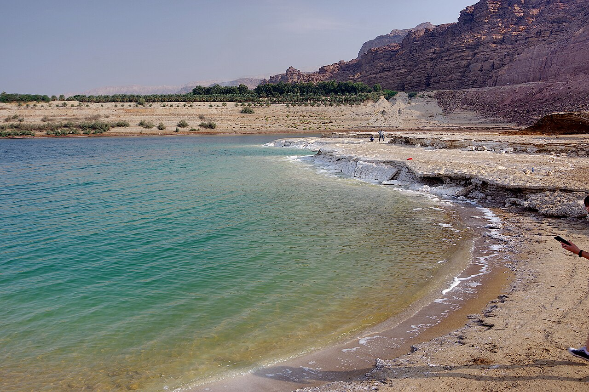
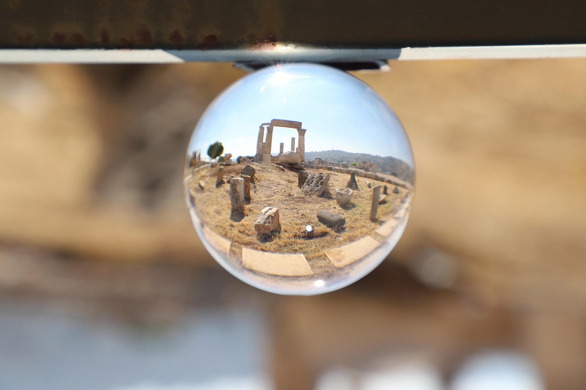
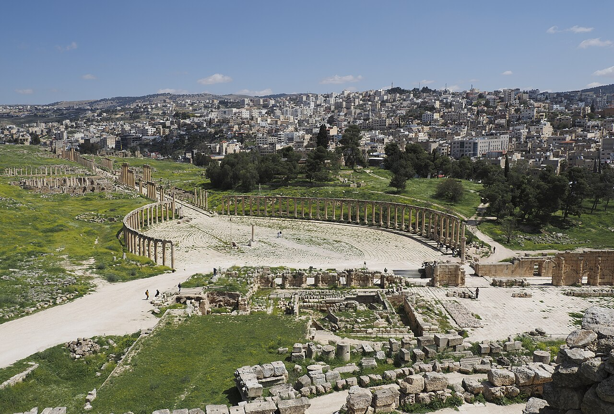

Destinations
Where to go in Jordan.
Six places worth the trip — and we weave the ones you love into a single private journey, at your pace.
The destinations
One small country, remarkably varied.
From rose-red canyons to the Red Sea — most are only a few hours apart, so a week sees a lot without rushing.

Petra
The rose-red city carved from stone
Explore
Wadi Rum
The valley of the moon
Explore
The Dead Sea
Float at the lowest point on earth
Explore
Amman
The capital that grew on seven hills
Explore
Jerash
Rome, remarkably preserved
ExploreAqaba
Jordan’s Red Sea escape
ExplorePlan your trip
Tell us who's travelling.
Share the comfort level you prefer — we'll design the journey around you, and reply on WhatsApp within a few hours.